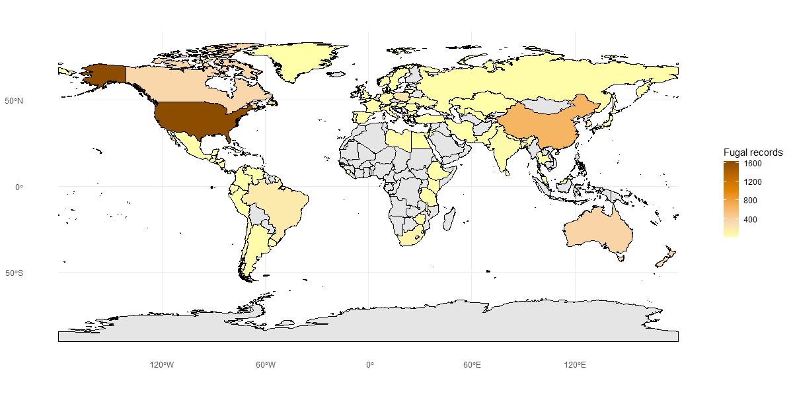

🚧 Site under construction – not an official release! 🚧
About us:
We are an international research initiative dedicated to understanding the diversity, biology, and impact of mycoviruses (viruses that infect fungi). By focusing on Botrytis cinerea as a model system, we aim to build the world’s first integrated platform for visualizing, sharing, and analyzing global mycovirus data. Our work brings together expertise in plant pathology, virology, bioinformatics, and genomics to create a collaborative resource that:
Promote mycovirus discovery
Provide insights into fungal-virus-host interactions
Evolutionary and mycovirome population dynamics across spatial and temporal scales
Support innovation in biocontrol strategies
Botrytis cinerea
Botrytis cinerea is a globally distributed fungal pathogen best known as the cause of grey mould disease, which affects over 1,400 plant species. It infects a wide range of crops including grapes, strawberries, cherry, tomatoes, cucumbers, and ornamental flowers, leading to significant agricultural and economic losses worldwide.
Biologically, B. cinerea is a necrotrophic fungus, meaning it kills host plant tissue and then feeds on the dead matter. It thrives in humid, temperate climates and is notorious for rapidly adapting to fungicides, making disease management a challenge. Mycoviruses that cause hypovirulence (reduced virulence) in B. cinerea is promising alternative.
Because it is easy to culture in the laboratory, has a fully sequenced genome, genetic tools, and a large collection of natural isolates, B. cinerea has become one of the most studied fungal pathogens. It also hosts a rich diversity of mycoviruses, over 100 have been reported, which can alter its growth, reproduction, and virulence.
For these reasons, B. cinerea is an ideal model system for studying virus–fungus interactions, and a powerful entry point for building a global understanding of mycoviruses.

Global distribution of Botrytis cinerea. The fungal records were extracted from USDA Host-Fungal Database, 2025 (Farr and Rossman 2024, https://fungi.ars.usda.gov/; accessed on 2025-10-02).
Mycovirome diversity
Modern sequencing and analysing methods have evidece the identification of thousand of new virus species, including new mycovirus species.In Botrytis spp. has been identified over 100 mycoviruses, including those ones that induce hypovirulence around the world. Some of there mycoviruses belonged to produce viral particles, which can be interesting feature for their use as biocontrol agents (BCA).
Geographical distribution of Botrytis cinerea mycovirome
Mycovirome Genome configuration
Diversity and prevalence of viral geome configuration idenfied in Botrytis cinerea
Cinthy Jimenez is a Research Fellow at the University of Auckland, New Zealand.
Her research interests lie in phylogenetics and virus evolution.
View profile.
Robin MacDiarmid
Curator
Robin MacDiarmid is Sci Group Ldr in Plant Pathogen Environment at New Zealand Institute for Bioeconomy Science Limited. Her research focuses on discovery of novel viruses and identifying their biological impact within ecosystems.
View profile.
Karmun Chooi
Curator
Karmun Chooi is a Senior Scientist at Plant & Food Research in New Zealand, specializing in plant-insect-virus interactions and disease management.
Her work includes developing AI-based tools for detecting grapevine leafroll disease (GLD) and leading projects to enhance high-value fruit production.
View profile.
The ICMP web dataset contains the information on all culteres in the ICMP. The collection culture (ICMP) is a major international collection of living microorganism cultures.
Virus taxonomy: the database of the International Committee on Taxonomy of Viruses (ICTV).
Lefkowitz EJ, Dempsey DM, Hendrickson RC, Orton RJ, Siddell SG, Smith DB. (2017) Virus taxonomy: the database of the International Committee on Taxonomy of Viruses (ICTV). Nucleic Acids Res. Jan 4;46(D1):D708-D717. PMID: 29040670. PMCID: PMC5753373.
 Robin MacDiarmid is Sci Group Ldr in Plant Pathogen Environment at New Zealand Institute for Bioeconomy Science Limited. Her research focuses on discovery of novel viruses and identifying their biological impact within ecosystems.
Robin MacDiarmid is Sci Group Ldr in Plant Pathogen Environment at New Zealand Institute for Bioeconomy Science Limited. Her research focuses on discovery of novel viruses and identifying their biological impact within ecosystems.